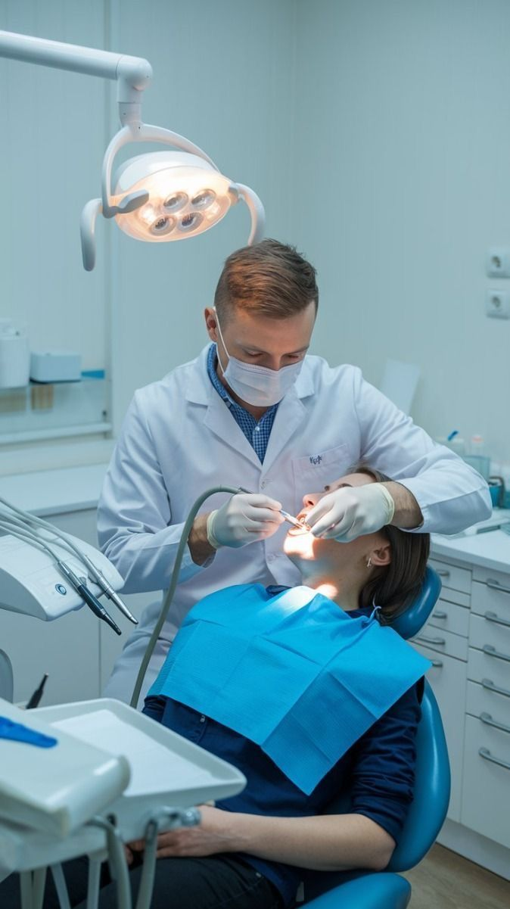
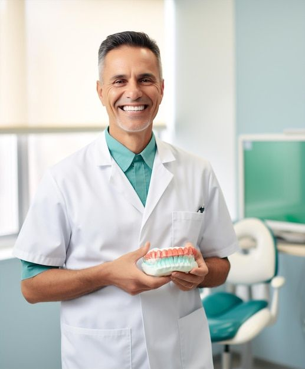

Formação de excelência
Formação acadêmica e trajetória profissional voltadas à Periodontia e Implantodontia.

Periodontia e Implantodontia
Atendimento especializado com planejamento individualizado, rigor científico e uma experiência clínica construída para cuidar de cada etapa do seu tratamento.
Formação acadêmica e trajetória profissional voltadas à Periodontia e Implantodontia.
Fellow do International Team for Implantology (ITI), rede internacional de referência em implantodontia.
Planejamento cuidadoso, comunicação clara e decisões clínicas orientadas para as necessidades de cada paciente.
Especialidades
Uma abordagem clínica que combina diagnóstico, técnica e acompanhamento em todas as etapas do tratamento.
Cuidado das gengivas e das estruturas que sustentam os dentes, com foco em saúde e prevenção.
Planejamento para reposição dentária e reabilitação oral com segurança e previsibilidade.
Procedimentos indicados para restabelecer saúde, função e equilíbrio dos tecidos gengivais.
Planejamento do contorno gengival em harmonia com dentes, sorriso e características individuais.

Diferencial clínico
Cada tratamento começa com uma avaliação detalhada. A indicação é construída de forma individual, considerando saúde, função, estética e o que faz sentido para cada caso.
Solicitar uma avaliaçãoSobre o especialista
Dr. Thales Drumond atua nas áreas de Periodontia e Implantodontia, com uma trajetória voltada ao cuidado individualizado e ao planejamento clínico criterioso.
Sua atuação reúne prática clínica, formação acadêmica e participação em redes de atualização profissional, sempre com foco em tratamentos seguros e bem indicados.
Agendar avaliaçãoAtuação profissional
Além da atuação clínica, a experiência profissional também pode ser compartilhada em ambientes de ensino e eventos.

Cuidado especializado com foco em saúde gengival, implantes e reabilitação oral.
Conteúdo voltado à atualização, troca de experiências e discussão de temas clínicos.
O consultório
Conheça um pouco da estrutura pensada para receber cada paciente com conforto e atenção.
Dúvidas frequentes
As orientações abaixo são gerais. A indicação adequada depende sempre de uma avaliação individual.
É a área da Odontologia dedicada à saúde das gengivas e dos tecidos que sustentam os dentes. A necessidade de tratamento é definida após avaliação clínica individual.
A indicação depende das condições de saúde, da estrutura óssea, dos dentes envolvidos e do planejamento de cada caso. Uma avaliação é essencial para definir as possibilidades.
O conforto do paciente é considerado em todas as etapas. O tipo de procedimento e os cuidados necessários são explicados durante a consulta de avaliação.
A consulta inicial permite conhecer o histórico, avaliar as necessidades clínicas e conversar com clareza sobre possíveis caminhos de tratamento.
Avaliações
Espaço reservado para avaliações reais e autorizadas de pacientes ou avaliações públicas verificáveis.
Inserir avaliação real de paciente.
Avaliação verificadaInserir avaliação real de paciente.
Avaliação verificadaInserir avaliação real de paciente.
Avaliação verificadaLocalização
Inserir endereço oficial, bairro, horário de atendimento e orientações de acesso.
Ver rota no Google MapsSolicitar avaliação
Envie sua mensagem. A equipe entrará em contato para orientar os próximos passos e verificar a disponibilidade de agenda.